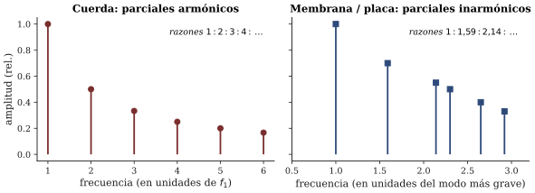
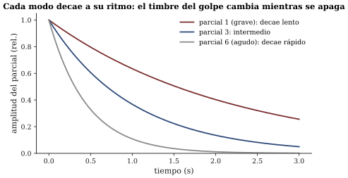

Modos de vibración: por qué cada objeto suena como suena
Sesión 03 · Curso Acústica Musical UC Objetivos que cubre: OA1.1 (identificar modos y parciales y relacionar la forma de vibrar con el espectro), OA1.2 (predecir el efecto del punto de golpe y del punto de apagado), OA5.1 (introducción: el proyecto queda lanzado).
¿Por qué el vaso dio varias líneas y no una?
La semana pasada usted dejó escrita una predicción: el vaso golpeado, ¿una línea o varias en el espectrograma? En la sesión lo comprobó: son varias — un puñado de líneas horizontales nítidas, cada una en su frecuencia, cada una apagándose a su propio ritmo. Y eso exige una explicación, porque el golpe fue uno solo. Nadie le entregó al vaso varias frecuencias; se las sacó de adentro.
La explicación es la idea central del curso: un objeto no vibra “a una frecuencia” ni vibra “como quiere”. Cada objeto — por su forma, su material, su tamaño y cómo está sostenido — tiene un repertorio fijo de maneras de vibrar, y cada una de esas maneras tiene su propia frecuencia. Ese repertorio se llama el conjunto de frecuencias características del objeto, y cada manera de vibrar se llama un modo de vibración (Benade 1990, cap. 4, construye la idea golpeando una sartén; nosotros hicimos lo mismo). El golpe no elige las frecuencias: solo decide con cuánta fuerza se enciende cada modo del repertorio. Por eso el vaso golpeado en el borde y el vaso golpeado apoyado en la palma dan huellas distintas del mismo repertorio.
Dicho de una vez: el espectro que usted ve en la app es la lista de los modos que el golpe encendió. Cada línea es un parcial, y detrás de cada parcial hay una forma de vibrar de todo el objeto.
¿Qué es exactamente “una manera de vibrar”?
Imagine la versión más simple de un objeto: una masa colgando de un resorte. Tiene una sola manera de oscilar y, por tanto, una sola frecuencia característica. Ahora encadene dos masas con resortes: aparece una segunda posibilidad — las masas pueden ir y venir juntas, o ir y venir en oposición — y cada una de esas coreografías ocurre a una frecuencia distinta. Con tres masas hay tres coreografías; con muchas masas, muchas. Una cuerda, una membrana o una sartén son, a los ojos de la física, cadenas de muchísimas masas unidas elásticamente: por eso tienen muchas frecuencias características y no una (esta construcción, sin ninguna ecuación, es la del cap. 6 de Benade — la mejor exposición cualitativa del tema que va a encontrar).
Dos rasgos de los modos conviene fijar desde ya. Primero, un modo es una forma de vibrar de todo el objeto a la vez: en el modo grave de la sartén se mueve el fondo completo; en un modo agudo, unas zonas suben mientras otras bajan. Segundo, en cada modo hay lugares que no se mueven — los nodos — y lugares de máximo movimiento — los antinodos. Esto no es un detalle decorativo: es la palanca práctica de la sesión. Si usted apoya un dedo donde un modo se mueve mucho, ese modo se apaga; si lo apoya donde el modo tiene un nodo, ese modo sobrevive. En el taller lo verificó: el dedo en el centro de la tapa mató unos parciales y perdonó otros. Tocar el objeto en distintos puntos es editar su espectro modo por modo — y eso es exactamente lo que hace un percusionista al elegir dónde golpear y dónde apagar.
¿Qué tiene de especial la cuerda?
En el taller, las razones entre los parciales de la sartén no dieron números redondos: f_2/f_1 salió 1,4 o 2,7 o cualquier cosa, según el objeto. La cuerda tensa es el caso opuesto y por eso es la estrella de la música. Sus modos tienen formas fáciles de dibujar — una barriga, dos barrigas, tres barrigas, siempre con nodos en los dos extremos fijos — y sus frecuencias guardan una relación asombrosamente simple:
f_n = n \, f_1 \qquad n = 1, 2, 3, \dots

El modo de dos barrigas vibra exactamente al doble del modo fundamental; el de tres, al triple. Puede verlo y oírlo, modo por modo y sumados, en la demo de la sesión (demo_modos_cuerda.html), y lo oyó en la guitarra: apoyar el dedo suavemente en la mitad de la cuerda deja sonar solo los modos con nodo ahí (los pares) y aparece la octava; en el tercio, aparece la docena de notas más arriba que los músicos llaman armónico natural.
Aquí el curso instala un vocabulario obligatorio de aquí a diciembre:
- Parcial es cualquier componente del espectro, cualquier línea, venga del objeto que venga.
- Armónico es un parcial cuya frecuencia está en razón entera con la fundamental (f_n = n f_1).
Todos los armónicos son parciales; casi ningún parcial de la sartén es armónico. La cuerda (y, veremos, la columna de aire) producen parciales armónicos; las campanas, placas, membranas y sartenes producen parciales inarmónicos. Cuando en la rúbrica de escucha describa un sonido, elegir bien entre estas dos palabras ya es media hipótesis: espectro armónico sugiere cuerda, tubo o voz; espectro inarmónico sugiere un objeto golpeado en dos o tres dimensiones. Y anticipa la percepción: los parciales armónicos se funden en una nota nítida; los inarmónicos se resisten, y por eso la sartén “no afina” (por qué el oído premia las razones enteras es tema de la sesión 5).

Recuadro opcional (para quienes vienen de ingeniería). La relación f_n = n f_1 de la cuerda ideal se deriva de exigir nodos en ambos extremos: caben las longitudes de onda \lambda_n = 2L/n, y con f = v/\lambda (la v aquí es la velocidad de la onda en la cuerda, no en el aire) sale la serie entera. La rigidez de una cuerda real desafina levemente esta serie hacia lo agudo — inarmonicidad que en el piano es audible y obliga a la afinación “estirada” (C&G, cap. 7; BEN cap. 8). En 2D el mismo argumento geométrico no produce razones enteras: las frecuencias de una membrana circular ideal siguen los ceros de funciones de Bessel, con razones como 1 : 1,59 : 2,14 : 2,30 (ROS, cap. 13; C&G, cap. 10).
¿Y cuándo el objeto es una superficie? (la percusión en su lugar)
Al pasar de la cuerda (una dimensión) a una membrana o una placa (dos dimensiones), los nodos dejan de ser puntos y se convierten en líneas nodales: curvas y diámetros quietos que dividen la superficie en zonas que suben y bajan alternadamente. Las figuras de Chladni que vio proyectadas — arena que dibuja las líneas nodales de una placa vibrando — son la fotografía clásica de esos modos (C&G, cap. 10, pp. 409–452).
La consecuencia musical es directa: en 2D las frecuencias características no caen en razones enteras. Membranas, placas, platillos y gongs son inarmónicos de nacimiento, y por eso la mayoría de la percusión tiene altura difusa: su espectro no ofrece la serie entera que el oído sabe fundir en nota. El timbal es la excepción construida a pulso: el caldero de aire bajo el parche, la tensión afinable y la costumbre de golpear cerca del borde (no en el centro) desplazan y seleccionan un grupo de parciales hasta dejarlos en razones casi enteras entre sí — y entonces aparece una altura cantable (BEN cap. 9, secs. 9.5; C&G cap. 10; ROS cap. 13). Es el mejor ejemplo del semestre de que la lutería es, en el fondo, ingeniería de modos: mover frecuencias características hasta donde el oído las quiere.
¿Por qué el sonido del golpe cambia mientras se apaga?
Última pieza de la sesión, visible en el espectrograma del vaso: las líneas no mueren juntas. Cada modo pierde su energía a su propio ritmo — en general los modos agudos se disipan antes y los graves sobreviven —, de modo que el timbre de un objeto golpeado es una película, no una foto: brillante y complejo en el ataque, cada vez más simple y opaco hacia la cola (Benade 1990, cap. 4). El oído usa esa película completa para reconocer “vaso”, “sartén” o “campana”. Cuando en el proyecto grabe su instrumento, no mire solo qué parciales tiene: mire cómo decaen.

El proyecto quedó lanzado
Desde hoy usted y su grupo tienen un encargo que atraviesa el semestre: construir o modificar un instrumento o instalación sonora y — esto es lo evaluado — explicar acústicamente lo que resulte. El enunciado completo está en la pauta entregada (hitos en s05, s10 y s15; la explicación vale más que el éxito sonoro). La sesión de hoy ya le dio la primera herramienta de diseño: todo objeto sonoro es un repertorio de modos, y diseñar es decidir qué modos tendrá y cuáles va a encender.
Síntesis
- Todo objeto tiene un repertorio fijo de frecuencias características; cada una corresponde a un modo: una forma de vibrar de todo el objeto, con sus nodos y antinodos. El golpe no crea frecuencias: enciende modos.
- Dónde se golpea y dónde se toca deciden cuáles modos suenan y cuáles se apagan (la palanca práctica del percusionista y del lutier).
- Cuerda ideal: f_n = n f_1 — parciales armónicos. Membranas y placas: razones no enteras — parciales inarmónicos; los nodos son líneas nodales. El timbal logra altura acomodando parciales en razones casi enteras.
- Parcial ≠ armónico: armónico es solo el parcial en razón entera con la fundamental. Vocabulario obligatorio de la rúbrica.
- Cada modo decae a su ritmo: el timbre del golpe es una película.
Hacia la sesión 04
Quedó en su ticket una pregunta: si pulso la misma cuerda en el medio o pegado al puente, ¿cambia la nota o cambia el timbre? La sesión 4 la responde con la “receta de vibración”: cómo el punto y la forma de excitación reparten energía entre los modos de la cuerda — con los instrumentos de cuerda pulsada que ustedes mismos van a traer (recuerde: traer 1–2 guitarras, charangos, ukeleles u otros por grupo). Y el proyecto sigue corriendo: ideas conversadas y bitácora al día.
Referencias y lectura complementaria
- Benade, A. H. (1990). Fundamentals of Musical Acoustics, 2.ª ed. Dover — cap. 4 (frecuencias características y decaimiento: la sartén, secs. 4.1–4.8 y EEQ 4.9), cap. 6 (modos desde cadenas de masas, secs. 6.1–6.5) y cap. 9 (membranas, placas y timbal, secs. 9.1–9.5).
- Campbell, M. & Greated, C. (1987). The Musician’s Guide to Acoustics. Oxford UP — cap. 5, pp. 183–202 (ondas y modos en cuerdas) y cap. 10, pp. 409–452 (percusión: membranas, ídiófonos, Chladni).
- Roederer, J. G. (1997). Acústica y Psicoacústica de la Música. Ricordi — cap. 4, sec. 4.1 (pp. 120 y ss.): ondas estacionarias en la cuerda. Lectura alternativa en español.
- Rossing, T. D., Moore, F. R. & Wheeler, P. A. (2002). The Science of Sound, 3.ª ed. — caps. 2 y 4 (sistemas vibrantes, modos) y cap. 13 (percusión), para ejercicios.